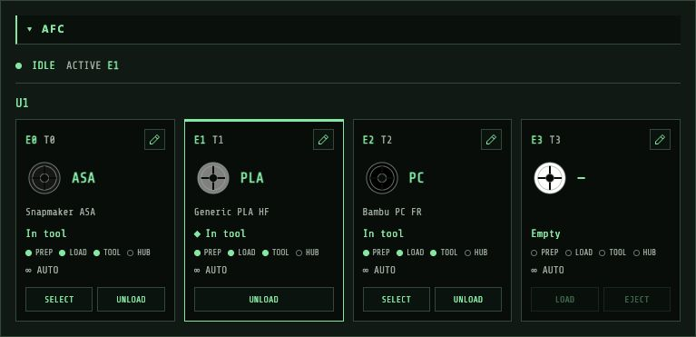

Documentation
AFC filament management, installation, connection settings and common tasks.
AFC filament management
Available in Retrograde 2.1 and newer. The dashboard detects the AFC Klipper object and displays the filament lanes listed in AFC.lanes, grouped by unit. It supports both real AFC status and the U1's AFC-Lite compatibility layer.

Lane cards show colour, material, filament name, tool mapping, active lane and preparation/load/tool/hub sensors. Remaining weight, spool ID and runout backup appear when reported. Internal drive/selector objects are excluded. The panel also shows AFC extruders, hubs and buffers.
Controls appear only for commands advertised by the printer: load/select, tool unload, lane eject, filament data, tool mapping, runout backup, toolchanger selection/docking, lights and message clearing. Movement actions require confirmation. Before sending, Retrograde rechecks readiness, active/paused jobs and AFC state; failed commands are never replayed.
Use the edit icon on a lane to change supported filament fields or assign a tool such as T1. Unload a lane from its tool before ejecting it. A timeout does not cancel an ongoing macro; inspect current state before retrying.
Disable the panel in Settings → Panels → Enable AFC panel, or collapse/rearrange it like other panels. These preferences are stored per printer.
The U1 capture demonstrates compatibility status. Real AFC hardware has not been exercised by this release's read-only validation. Advanced hardware calibration/configuration, Spoolman catalogue browsing and print-start material assignment are outside the current panel's scope.
Installation
Run this command in a terminal on the machine where you want to host Retrograde, usually the machine running Moonraker:
curl -sSL https://justinh-rahb.github.io/retrograde/install.sh | bashThe installer downloads the latest release and offers nginx setup. Follow its prompts and open the address it reports.
Manual installation
Download the ZIP from the latest release, extract it and serve the extracted files with a web server. For a local trial:
cd /path/to/extracted/retrograde
python3 -m http.server 8080Open http://localhost:8080. The frontend and Moonraker can run on separate machines, provided your browser can reach both and Moonraker allows the frontend's origin.
Connect a printer
Enter the Moonraker host address and port in the connection dialog. The usual Moonraker port is 7125. Enable autoconnect to reconnect when the page opens.
Use Hosts to add, switch, edit or remove printers. Each host has separate settings, camera definitions, macros and dashboard preferences. Retrograde stores preferences in that host's Moonraker database and keeps a local cache for offline startup.
If settings conflict with changes made in another browser, the dashboard offers a choice between the browser copy and the Moonraker copy.
Using Retrograde
Dashboard and controls
Click a panel heading to collapse it. Enable Arrange panels to move panels using drag handles or arrows, then turn it off when finished. Wide and compact layouts are saved separately.
Home axes before manual movement. Click an axis position to enter an absolute target. Temperature and fan controls accept numeric values alongside sliders; reset controls restore their defined baseline values.
Klipper recovery
When Moonraker is connected but Klipper reports an error, shutdown or disconnection, the dashboard offers Restart and Firmware Restart. Restart reloads Klipper and its configuration; firmware restart also resets the connected MCUs. Both require confirmation from the recovery prompt. Standalone restart macros and console commands use the same Moonraker recovery APIs, even when ordinary printer controls are unavailable.
Recovery waits for Klipper to report ready. A ready printer's active or paused print blocks a restart. G-code scripts allow up to ten minutes for acknowledgement; read requests normally time out after fifteen seconds and restart requests after sixty seconds. A timeout does not cancel a script. Check actual printer state before retrying; Retrograde does not replay failed commands.
Files and print history
Use Files to browse directories, upload G-code and inspect thumbnails and slicer metadata before starting a print. History shows previous jobs. Browser Back/Forward tracks top-level views; changing settings tabs or file directories updates the current URL.
Cameras
Configure camera URLs and stream types under Settings → Cameras. Choose MJPEG, WebRTC or an HTML page (iframe). Add from Moonraker imports supported webcam definitions without replacing existing preferences. Relative iframe URLs such as /helixscreen/screen resolve against the printer’s web host. Rotation, flips, aspect ratio and optional scanlines are supported. Camera playback stops when its panel is collapsed, off-screen or in a hidden tab.
Settings and backups
Use Settings → General to export the selected printer's configuration or all host profiles. Import a settings export to restore it. Settings → Interface includes heading-font selection and display options.
Features added on dev may not be in the latest published release. Check the release notes for your installed version.
Updates and removal
Run the installation command again to update. The installer backs up the existing installation and downloads the latest release. It also recognizes installations under the former retro-cnc-panel name.
To remove an installer-managed installation:
curl -sSL https://justinh-rahb.github.io/retrograde/install.sh | bash -s -- --uninstallBuild from source
Use Node.js 22 or newer. The dev branch includes changes that have not yet been released:
git clone --branch dev https://github.com/justinh-rahb/retrograde.git
cd retrograde
npm ci
npm run buildServe dist/ with your web server. Flight v2 is the default theme; use APP_THEME=retro npm run build for the original theme.
Local development
After npm ci, start the development server instead of building static files:
npm run devOpen the URL printed in the terminal. The development server reloads changes while you work. npm run build creates files in dist/ for deployment and does not start a server.
Build-time settings
A settings export can provide defaults for new hosts. Existing user preferences take precedence:
DEFAULT_SETTINGS_FILE=printer-defaults.json npm run buildFor Docker, place the export in the build context:
docker build --build-arg DEFAULT_SETTINGS_FILE=printer-defaults.json -t retrograde .